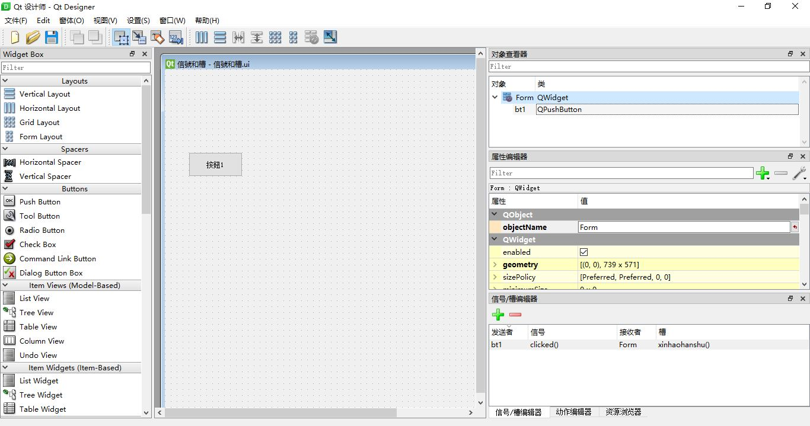

"""
文件名: 信号槽演示
"""
import typing
from PyQt5.QtCore import QObject, pyqtSignal
# 定义信号类
class MySignal(QObject):
messageSend = pyqtSignal(object)
def __init__(self):
"""
初始化，使用super.__init__会报错
"""
QObject.__init__(self)
def send_message(self, message,method):
"""
这个函数发送信号
"""
self.messageSend.connect(method) # 连接
self.messageSend.emit(message)
self.messageSend.disconnect(method) # 断开连接
# 定义槽
class MySlot1:
def receive_message(self, msg):
print("1收到信号:",msg)
class MySlot2:
def receive_message(self, msg):
print("2收到信号:",msg)
if __name__ == '__main__':
# 信号
signal = MySignal()
# 槽
slot1 = MySlot1()
slot2 = MySlot2()
# 发送信号，连接到槽
signal.send_message("收到了吗?", method=slot1.receive_message)
signal.send_message("收到了吗?", method=slot2.receive_message)
signal.send_message("收到了吗?", method=slot2.receive_message)
布局图

# -*- coding: utf-8 -*-
"""
文件名: 信号和槽.py
来源：使用pyuicc 自动生成
"""
# Form implementation generated from reading ui file '信號和槽.ui'
#
# Created by: PyQt5 UI code generator 5.15.4
#
# WARNING: Any manual changes made to this file will be lost when pyuic5 is
# run again. Do not edit this file unless you know what you are doing.
from PyQt5 import QtCore, QtGui, QtWidgets
class Ui_Form(object):
def setupUi(self, Form):
Form.setObjectName("Form")
Form.resize(739, 571)
self.bt1 = QtWidgets.QPushButton(Form)
self.bt1.setGeometry(QtCore.QRect(40, 140, 91, 41))
self.bt1.setObjectName("bt1")
self.retranslateUi(Form)
self.bt1.clicked.connect(Form.xinhaohanshu)
QtCore.QMetaObject.connectSlotsByName(Form)
def retranslateUi(self, Form):
_translate = QtCore.QCoreApplication.translate
Form.setWindowTitle(_translate("Form", "信號和槽"))
self.bt1.setText(_translate("Form", "按鈕1"))
"""
文件名: 运行.py
来源：手动编写
"""
from PyQt5 import QtCore, QtGui, QtWidgets
from PyQt5.QtWidgets import QApplication
import sys
from 信號和槽 import *
class MaintWindow(QtWidgets.QMainWindow, Ui_Form):
def xinhaohanshu(self):
print(self.bt1.text())
print("信号")
def __init__(self, parent=None):
super(MaintWindow, self).__init__(parent)
self.setupUi(self)
def main():
app = QApplication(sys.argv)
form = MaintWindow()
form.show()
app.exec_()
if __name__ == '__main__':
main()